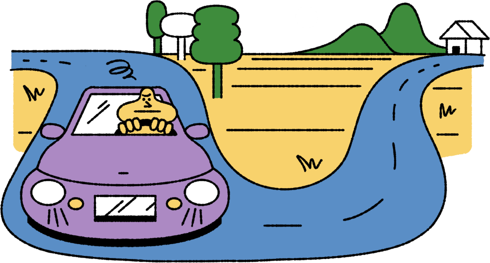
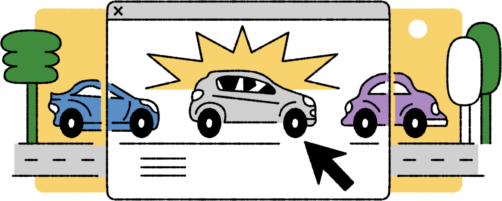
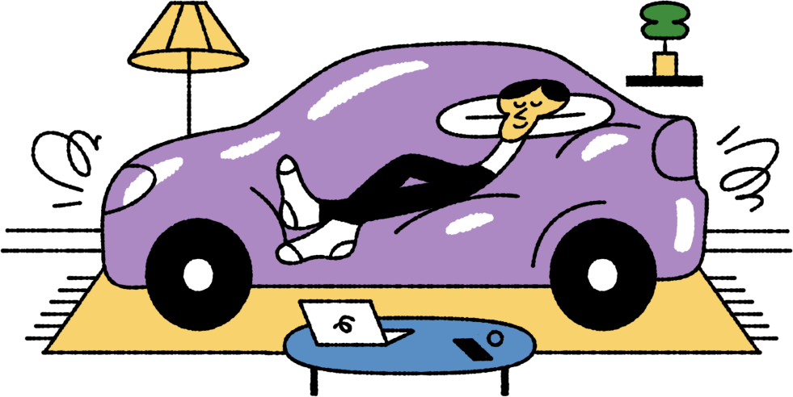

Автосалон онлайн: что это и как работает
Партнерский материал
Renault продолжает продавать машины через интернет: это заметно экономит время клиентов. Такая схема покупки
для россиян пока непривычна, хотя в европейских онлайн-шоурумах предлагают даже люксовые модели
Н
Нора Шпигельхоф, укутавшись в клетчатый плед, не сводит глаз с роскошного кабриолета,
припаркованного у ее особняка. После окончания Мюнхенской высшей школы музыки и театра она
не проработала и дня: вышла замуж за наследника швейцарской шоколадной империи и уехала
в Женеву.
Норе уже 82, и всю свою жизнь она мечтала об очень быстром автомобиле, желательно
с мягким верхом. Супруг Себастьян Шульц мог позволить ей даже личный самолет, но когда Нора
начинала взахлеб рассказывать об очередной новинке местного мотор-шоу, Шульц вспыхивал: он считал,
что суперкары — это самая опасная вещь на Земле. Поэтому если Норе нужно было съездить
в город, она садилась в свой дизельный трехдверный Renault, который и после десяти лет
неторопливых поездок по шоссе выглядел почти новым.
Шульца не стало в 2010-м. Пережив тяжелую утрату, Нора через три года вернулась в Баварию
и купила уютный особняк у самого подножия Альп. Через пару дней после переезда госпожа Шпигельхоф
открыла ноутбук и принялась заказывать роскошный кабриолет. Желательно черный и с W12.
Как телефон, только машина
С Патриком Вилкеном мы познакомились в Берлине на одном из дилерских мероприятий.
Немец уже несколько лет занимается продажей люксовых автомобилей через интернет, и, по его словам, так��х
сложных клиентов у него еще не было.
«Представляешь, звонит мне бабушка и жалуется, что на сайте не нашла подходящий вариант отделки салона»,
— вспомнил Вилкен.
Госпожа Шпигельхоф очень скрупулезно подошла к выбору машины. Она заказала понравившуюся модель
в максимальной комплектации, но нужного шпона для отделки передней панели в конфигураторе
не нашла. В итоге Патрику, чтобы уладить все нюансы, пришлось ехать домой к Шпигельхоф,
примерно в 70 км от Мюнхена.

«Если мы продаем машины онлайн, то не должны контактировать с клиентами напрямую,
это противоречит нашей логике. Я, честно говоря, был очень зол, когда ехал к ней. В доме меня
встретила пожилая дама, которая ткнула в сторону огромного рояля. Она хотела, чтобы в салоне
ее суперкара был шпон, как у любимого музыкального инструмента покойного
мужа», — развел руками Вилкен.
Целый месяц Патрик вел переговоры с заводом, и наконец этот день настал: он подогнал к дому
Шпигельхоф сверкающий кабриолет и передал все бумаги и оба комплекта ключей. Да, внутри был шпон как
у рояля.
«Подождите, молодой человек, мне нужна помощь с подключением моего iPhone к мультимедийной системе»,
— остановила продавца Нора Шпигельхоф.
Машина через интернет по-русски
В России теперь тоже можно купить машину через интернет. Масштабные продажи, несмотря на все
законодательные сложности, запустила Renault. Французы предлагают купить любую модель без предварительного
посещения дилерского центра — достаточно зайти на сайт и воспользоваться конфигуратором.
За полтора года таким образом было продано уже больше 10 тысяч машин, и в Renault считают,
что всё только начинается. остановила продавца Нора Шпигельхоф.
При этом Renault всё еще остается единственным брендом, который предлагает купить машину онлайн
на собственном сайте. Через интернет автомобили предлагают отдельные дилеры разных марок,
но централизованно это делают только французы.

«Для запуска интернет-продаж необходимо изменить многие принципы в работе всей компании, а это довольно долгий процесс. В то же время нужно убедить все заинтересованные стороны, что подобный проект будет финансово эффективным. Пока не так уж много успешных примеров подобных проектов в автомобильной индустрии. Тем не менее мы знаем, что наши конкуренты уже работают в этом направлении и ожидаем запуска нескольких проектов в 2018 году»,
— рассказал представитель российского офиса Renault.
Всё начиналось с Kaptur, стильного кроссовера, который французы начали выпускать в 2016-м.
В Renault посчитали, что покупатели этой модели моложе, а значит, менее консервативные, они ожидают
клиентский сервис более высокого уровня и ценят свое время. То есть компания предложила купить машину
онлайн той категории клиентов, которая уже регулярно пользовалась такой схемой в повседневной жизни.
Сейчас на сайте представлен весь модельный ряд Renault. Механика покупки предельно проста: клиент выбирает
нужную модель в желаемой комплектации и проверяет ее наличие у удобного дилера. После этого
через интернет вносится символическая предоплата, а недостающую часть клиент доплачивает уже
непосредственно при передаче машины у официального дилера. То есть покупатель посещает официального
дилера всего один раз: забирает ключи, подписывает бумаги и уезжает на оплаченной машине.
Прямо сейчас больше всего автомобилей через интернет покупают жители Москвы. При этом в Renault
рассказали, что доли онлайн-продаж в Санкт-Петербурге, Казани и Екатеринбурге уже сейчас сравнимы
и быстро увеличиваются.
Очень важное событие
В нынешних законодательных реалиях развивать интернет-продажи тяжело, но возможно, признаются
в Renault.
«Российское законодательство в сфере дистанционной торговли на данный момент вызывает
определенные сложности. Оно недостаточно развито и не соответствует сегодняшним реалиям, особенно
если говорить об автомобилях. Мы бы хотели развивать это направление быстрее и создавать новые
и новые онлайн-сервисы, но у нас ограниченное пространство для
маневра», — рассказал представитель Renault.
Еще один нюанс, который отчасти тормозит развитие онлайн-шоурумов, связан с российским менталитетом.
Здесь покупка автомобиля — это по-прежнему очень важное событие, поэтому многие покупатели будут
пользоваться традиционными способами приобретения машины, то есть посещать дилерские центры несколько раз.
Цены в онлайн-шоурумах не отличаются от тех, которые представлены у самих
дилеров. «Мы как производитель только рекомендуем цены, а финальное ценообразование
регулируется каждым дилером самостоятельно. В ряде случаев цены на нашем сайте даже ниже, поскольку
часто дилеры публикуют более выгодные предложения в соответствии со своими промопланами.
Конечно же, банки удерживают комиссию, но это не влияет на цену для
клиента», — заверил представитель компании.
Машина с доставкой на дом
В Renault не исключают, что в будущем в России появится услуга доставки автомобиля
к дому — в таком случае клиенту вообще не придется приезжать к дилеру. При этом
подобная услуга не исключает дилера из процесса: у менеджеров по продажам будет
такой же объем работы, просто им придется переориентироваться на новые принципы продажи.
Французы видят большой потенциал в развитии онлайн-сервисов для российских клиентов. Например, недавно
была запущена услуга записи на техническое обслуживание с предварительным расчетом стоимости.
Будут новшества и в самом процессе покупки. Например, в Renault не исключили, что
в ближайшем будущем при покупке автомобиля задействуют технологии виртуальной реальности. То есть
в выбранную машину можно будет сесть не выходя из дома.
